十强赛棋局赏析
#1 十强赛棋局赏析 作者：有志青年 发表时间：2006-2-6 14:45:16
首贴说明
这部分内容都是从网上搜集来的，地址见http://renjupost.diy.myrice.com/chidaodebaodao/1.htm
现在网络上的五子棋网站很多内容正在面临丢失，转过来算是抢救文物吧。
#2 宫牧洲VS刘彤——刘彤六段自评 作者：有志青年 发表时间：2006-2-6 14:47:40
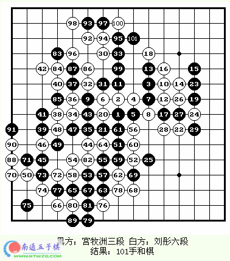
刘彤六段自评
第二轮。我对我的学生宫牧洲。
这一轮小宫执黑。疏星开局，我没交换。白4强防。黑5最流行的下法。前16手定式。白18斜活三，黑19防。因为上一轮小宫对上海棋手葛凌峰时走的也是这个变化，小宫的20下在白22处。葛凌峰黑下在白34处。一下黑的优势。所以我20手下在了黑的要点上。黑21手防。白22再防黑的活二，有杀。黑23活三。黑25做，好手。白26跳活。28做杀。黑29手强防。白30在上面和上面联系。31边防带做。32防住黑冲再做杀。33强防。34防。35好手。白36手对攻。37手防。38活三。39防，40再做，41防。42手太想胜了，可能有问题。43反挡。白44手强防。但是丢掉了先手。果真，小宫经过了二十多分钟的长考。终于开始进攻了。45跳三，46强，47冲。48防。49再冲，50防。51妙，作棋和下面的子力进行联系。52强防。这步棋我思考了三、四十分钟。53跳三，54防，55再活三，56强。57好手，58最强。59再做，60最强。61冲，62防，63冲，64防，65冲，66防，67活三，68冲四，69防，70跳冲，71防，72再冲，73防，74再冲，75防，76防回。黑上面无法胜。黑上面交换后，83手防白棋。但是上面已经太小，白在上面连续进攻后，由于空间太小，虽然先手，但没有地方，最终和棋。这盘棋和得非常吃力。宫三段中盘进攻非常厉害，是北京棋手中进步最快的。
#3 包海滨VS葛凌峰 作者：有志青年 发表时间：2006-2-6 14:49:32
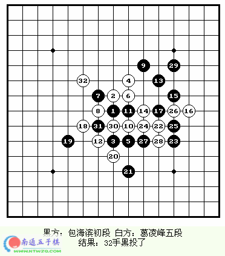
葛凌峰五段在本次全国赛中的九盘比赛中有八盘是疏星，另外一盘瑞星就是最后一轮，即本埸中走出来的。而对包海滨来说，这也是他在本次大赛中为取胜的最后的一搏了。
包海滨开局，葛凌峰五段没换，也许在这时他已经做好走白14变化的准备。这个变化这个十强赛出现过两次，都很成功，这或许就是针对不同的对手制定相应的战术吧，不过或许这也注定了这两盘棋都也为开局的较量。黑棋的17手可能很出乎白棋的意料。白棋18、20反三，这时黑棋的决定防哪边很有些难度，因为计算量很大。最终黑棋跟过去防了一手。
大家一起来分析一下现在的局势。
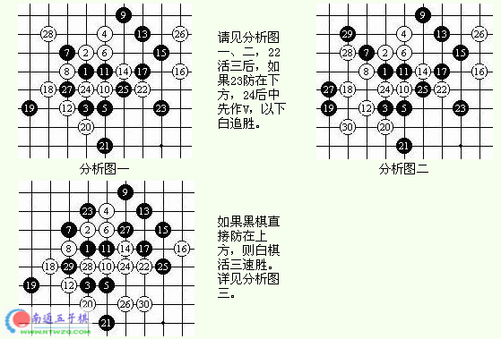
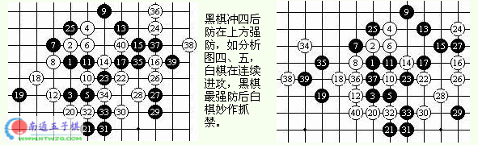
黑棋防在上方强。白棋不好下。
实战中黑棋防在了下方，22正确。24不好。以下黑棋交换后，白棋已经不好赢了。29？30手冲后，32手妙作抓禁。类似这样的手段在瑞星这个黑13的变化中是很常见的。也许包海滨对这些变化并不熟。黑棋遂投子认负。
#4 肖迪VS刘彤——肖迪三段自评 作者：有志青年 发表时间：2006-2-6 14:51:12
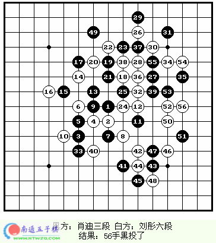
这盘疏星开局，前12手正常。13手求稳。15、16、17本以为黑棋占主动。18手好棋，封住了黑棋以后发展的路线。19手防守。25手黑棋以攻为守。26手攻守兼备。27手无奈之举。28、29必然。32手我认为比较不错，有可能借助右上方的优势转身到右下方，这边零星的几个子要攻起来我认为还是比较可怕的。其实这个局部是赢不下来的。（如右图,如果白棋跳三，黑棋看似需防左边，其实可以单防在中间）。41手先手进攻。至47手，进攻没有得到显著的优势，49手回去防守。这时候刘老师提和，我没和。结果，50手强攻，51手败着，防在39下很好。以下52手活三，以下白VCF抓黑棋四四禁。
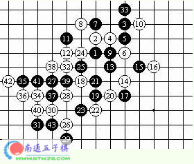
#5 李洪斌VS刘彤 作者：有志青年 发表时间：2006-2-6 14:53:04
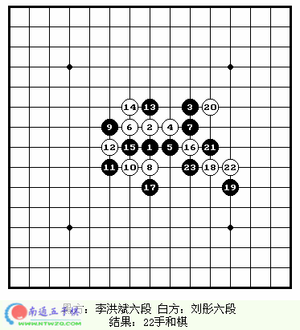
疏星开局。白8是另一个走得比较多的变化。但比起那个白8明显要少得多。其实只要对自己的防守有信心，这个变化白棋还是完全可以下的，宫牧洲对李洪斌那盘充分地说明了这一点。而实战这个白10据统计其和棋的机率是比较高的。以下至18手是定式。18手还有直接走20的变化。这样白棋防守相对容易，但自己则没有什么好的机会。以下至23手都是最流行的变化。不知道为什么，比赛记录的谱就到了这里，不过可能是双方都太疲劳了，双方都没走多少手，便握手言和。
#6 包海滨VS李洪斌 作者：有志青年 发表时间：2006-2-6 14:54:04
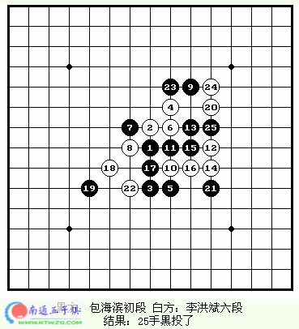四轮不胜，这一定是赛前李老师，也是所有人都没想到的。也把李老师逼到了非赢不可的绝路上。这个时候遇到他，包海滨可以说有一些不幸。
瑞星开局。前11手正常。白12手是陈伟曾经用过的，李老师这么走，一定是有所研究。果然，14手变招。这个变化很复杂，下结论可能还要等一段时间，也许会成为新的定式？没有人知道。实战包海滨这么下似乎也不是不可以的。16-22手走得很连贯，22防在左边较好，否则黑优势。李老师认为，这时黑棋在上边处理一下还是完全可以下的。23？！正当双方准备在中盘展开一埸大战的时候，黑棋犯了一个低级而致命的错误。以下白棋两步冲四后抓四、四禁。看到白棋的冲四后，黑方方恍然大悟，遂投子认负。
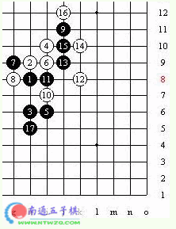
#7 陈品才VS刘彤 作者：有志青年 发表时间：2006-2-6 14:55:19
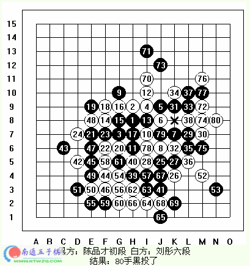
刘老师本轮的对手是巨人杀手陈品才，作为巨人之一，刘老师的心里难免有些惴惴不安，尤其是陈品才刚在上一轮战胜葛凌峰五段，而刘老师又在上一轮负于自己的学生胡夕三段。
比赛中陈品才开了黑优的斜月局，也许是担心对方有所准备，刘老师在上轮开了不平衡的山月失败了的压力下，仍然选择不交换，而且两打留下了必胜点。白6、黑7的这个变化在北京世界杯A组赛中，张老师和苏切科夫走过，并执黑战胜了对手。这个战术应该是刘老师在实战中临时准备的。黑棋 的前13手应对无误，第15手有些问题，常见的走法是G6，黑优。但中国棋手研究有所不同，并认为这时黑棋可以必胜。18手提前交换是好棋。至24白棋已经在左侧将黑棋防干净了。黑25转到右边来作棋。25手走得非常强。26手强防，至29手黑棋攻得非常强，但据当时大家在观棋的室拆解，黑棋在这个局部并不是必胜。至34手白棋成功地在这个局部防住了黑棋，看到赢不下来，黑棋开始转而防守，在这之前37-41的交换得非常好，化解了白棋很多优势。白棋42手开始在左下进攻，这个局部白棋有不少外势，但空间小了一些，黑棋47、49两冲四进一步化解黑棋的优势，51手唯一防。这时给人的感觉，是白棋优势非常大，也很厚实，但拆来拆去，离胜利总是差了一点儿。刘老师大概也算出这个局部不好赢，但也许能取得一些优势。53有些问题，防在上边白棋也不能赢？这样给了白棋优势。在下边交换后，白棋转身在上方作棋。70-73可好？71手强防，但也许应该先在72位冲四交换。这时白棋有优势，但要赢还得走出很强的棋来。73手？整盘都走得很不错的陈品才竟然在这时犯了这么一个错误！这使我们想起了第七届京都世界杯中Ando与金秉允的那盘。这时果然用到了那个左下的那个冲四，80手后抓黑棋四、四禁胜。
#8 胡夕VS李洪斌 作者：有志青年 发表时间：2006-2-6 14:56:37
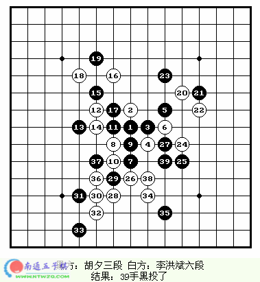
最后一轮。李洪斌老师已经没有夺冠的可能，但前四名可以成为下届的种子选手，因此本局并不只是为了荣誉而战。胡夕则是一身轻松。第三天里，她在这之前分别与宫牧洲和肖迪战和，都是下至满盘，其疲劳是可想而知的。
雨月开局。李洪斌老师对云、雨月局的新老变化的研究是很深的，据说李老师在比赛前了解到胡夕的基本定式不是很扎实。其实说实话，那威俱乐部集训队的学员中除了宫牧洲以外基本功都不太好。这个开局显然是有针对性的。从实战的结果看，胡夕果然不会，但云、雨月的变化是很复杂的，即使曾经背过谱的宫牧洲，骤然走出来，也得想一陈子。
实战中黑7变招，在不会谱的情况下，胡夕还是决定把其当疏星下。白8强防。黑9有些损，也许走F7好一些。白棋继续防守，等待机会。黑13走得有些保守。在左边攻可好？比如K9、L7、K7等等。即使想防，也可以用先手进行交换。16手好棋。17手不好。这时应该注意占据外势，比如E11之类的点。从实战的结果来看，黑棋在左上的局部失先了。20手好棋，“要想赢，先盖冲”，联系了很多子力。以下白棋扩大优势，黑棋防得也不能说有什么问题吧，这时黑棋已经较为被动了。比如25防得还是很强的。26全盘联接。如果黑棋在J12之类的占做棋，白棋在I4活三之后可以在I6做V。27不太好。太顾及局部了。白棋自然立即离开黑棋在左边展开了强大的攻势。黑棋已经是在勉强支持了。32手后白棋开始连续活三，至39手黑棋投子认负。
这埸比赛黑方整盘走得有些失水准。这当然和胡夕三段极度的疲劳有很大的关系，其实如此紧凑的赛制和如此大的体力消耗，对于一个11岁的孩子来说，坚持下来，已经很不容易了。比赛后胡夕脸上露出了轻松的笑容，大概是说，比赛终于结束了。
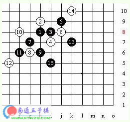
#9 胡夕VS陈品才 作者：有志青年 发表时间：2006-2-6 14:58:58
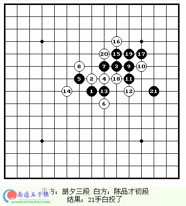
这埸比赛之前已经爆出李、陈之战的冷门了。由于对对手不熟悉，赛前胡夕郑重地去找张进宇教师作陈伟老师商量对策。经过分析，大家认为，对方虽然会使用一些骗招，但他的谱一定并不熟——很遗憾，这次全国赛的棋谱没有两打的记录。这盘棋的另一个两打是5-7，因为当时大家认为，这个点在大赛中不是经常出现，在不熟悉的情况下，对方很可能会留下大优的5-5。实战也证明了这一点。
黑9并不是最强的变化，也许是想出奇致胜。也许陈品才对这个变化真是不熟，他并没有最强的白12（如右图）。这么走当然不好，但最致命的则是下一手，白14？……，这相当于白棋用两个子力去防黑棋1_13这个二，在连续占了两手便宜后，现在黑棋右边的优势已经显而易见了。15手必然。16后，黑棋简单地连续活三，21手跳三后下一手M10双杀，白棋投子认负。
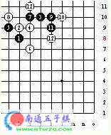
#10 刘彤VS包海滨 作者：有志青年 发表时间：2006-2-6 15:00:00
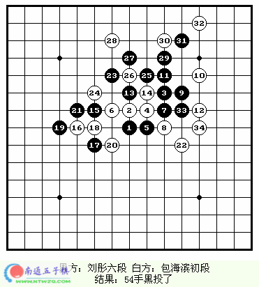
这一盘也是疏星开局。可能由于比赛刚开始，彼此不是很了解，所以第一轮中五盘棋中除了李洪斌老师对陈品才的那盘有所准备而开了松月变为银月外，其它四盘全走了公认最平衡的疏星局。
黑9后，11并没有走常见的几种变化，而是直接走在了J11。这手棋是在铁岭比赛时出现的，据说是网络高手用软件研究出来的下法。白12直接如左图那么进攻，黑15唯一防，可以防住。白14着于I12、L9，黑15在H10跳三，可以变回黑13-H10的变化。刘老师在这盘棋中借鉴了这种下法，进行尝试。
实战中白棋选择防在右边。13-17手正常，18略有疑问，F6可更好？但至20按实战的下法也是可以下的。22手？！这么脱先太过份了吧？事后包海滨说他也觉得黑棋左边会有东西，但刘老师未必走得出来。这么想实在是太不现实了，刘老师的实战也证明了这一点。24也可防在上边，但黑棋在D10作V速胜。以下黑连续活三，29以下VCF。包海滨当时算出了黑棋怎么赢，他说他当时的想法是，跟着走最强防，如果对方走出VCF，再投子。于是在33后，白投子认负。
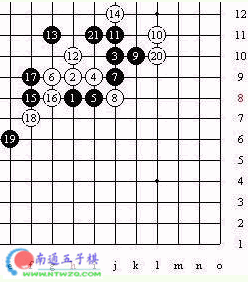
#11 张进宇VS胡夕 作者：有志青年 发表时间：2006-2-6 15:00:58
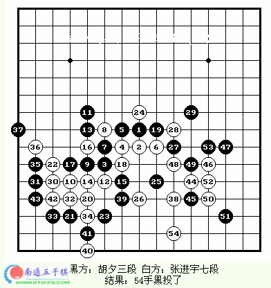
疏星开局，前8手正常。黑9没有走最常见的H6点。以下11最常见的着法有H6、27、11三种。选择实战这种下法的最多。14反三必然，14-16必败，大家可以看看世界杯报导中本网站所评王梓的那盘棋。至24手定式。25可以在上方作棋进攻，但白棋应对无误是攻不下来的，实战黑棋没有选择这样的下法，而是在下方防了一手。
27好棋，因为26手占H4后，有著名的（田溢坊老师语）30、32的手段。如果没有27这颗子的话白棋就必胜了。虽然攻不下来，但白仍然选择了30、32的走法，也许是要迫使黑棋走唯一防交换到一些优势，从实战的效果看，也确实有这样的效果。33、35都是唯一。38好棋。貌似并不凶悍，但却令黑棋不好落子。像这样飘而且柔的棋有时候更可怕。首先黑棋不能脱先在I9这样的点做棋，否则白棋在I3做棋就不好下了；要防守又不容易找到很好的点。39似乎是想带着先手去防。40好棋，并没有给白棋先手，44仍然飘逸，但这次的优势是显然易见的了。45不能在K7这样的点对杀，白棋可以走H3牵制。45当时在观棋室评棋的崔悦五段认为黑棋防得稍弱。46、48好棋。49只有H6、I6、49三种选择。其中H6与49没什么区别。49-I6则白50-J3速胜。实战黑棋选择了第三种。这时请大家注意，大家可能觉得白棋53手后L2、M5、54、J3连续杀更直接，平时拆棋当然不失为精彩，但在实战中的着法力求简洁，而且少算一些步，则少一分误算的危险。54后下方有F2、H2、L2、I2四、四；右边J5、M5四、三。白简单胜。
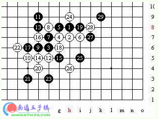
#12 肖迪VS李洪斌 作者：有志青年 发表时间：2006-2-6 15:02:18
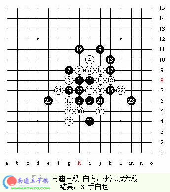
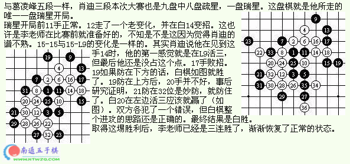
#13 专访陈品才 作者：有志青年 发表时间：2006-2-6 15:02:59
来自浙江的陈品才无疑是本次十强赛最大的黑马，他不但以8分的优异战绩名列第七，而且战胜了张进宇七段、李洪斌六段和葛凌峰五段三位高手，大大出乎了许多人的意料。这也是本次全国赛最令人不解和感兴趣的话题之一。为此我们特地在大赛结束后采访了浙江棋手陈品才：记：品才你好！首先祝贺你在本次大赛中了以得如此好的战绩。
请问作为本次大赛唯一连胜张进宇、李洪斌两大高手的棋手，你现在的感想如何吗？你在十强赛前想过这样的结果吗？请问你赛前的目标是什么？
陈：有点运气。对李洪斌我是准备好的，我执黑开松月，我猜到他可能交换，松月他肯定很熟，我就准备好了银月的变化。这人变化很复杂，记住不不容易。再说，有时间计算，仔细地防守，最主要还是李老师走错了一步，后面仔细地算就防住院了，再后面就大优了……；至于张老师那盘，应该说绝对是侥幸！大家看看棋谱就知道了。胜得不可思议。
关于结果，比赛什么情况都有可能，爆冷是很有可能的。
赛前的目标，只是第9吧，只要不是第10就可以了——一定不能最后一名！
记：因为是京沪以外的棋手，所以比赛前你并不被看好。请问黑马的感觉如何？
陈：除了开心、激动等没有别的什么词了。
记：连胜强手，虽然都有一些偶然，但也一定有其中的道理。请问你比赛前什么特别的战术和准备吗？
陈：靠临埸的发挥吧，没什么太多的准备。
记：正如大家所见到的，你在对张、李的比赛中都用了对方秘胜的变化。有人说你爱使用骗招，不知你有何看法？
陈：不说是骗招吧，谁说必胜不可以下？只是下了自己熟悉的东西。
记：这次比赛你战胜了许多第一集团的高手，但对北京许多年青棋手的战绩却不佳。请问你对此的看法。
陈：我感觉这恰恰反应了南方和北方、专业与业余的差距。当然，北方那些小棋手谱记得特别熟，下棋并不是完全靠中盘，虽然南方还有许多高手，但对开局的谱记得没北方那么系统和严密。
记：有个问题不知该不该问（得到他的许可后我们问了下去）——在最后一轮前你赢了就第三了，但大家似乎都不太希望你赢，请问你的看法？
陈：假如获得第三的话，我也是通过公平竞争上来的，成绩也是实打实下出来的，我不太理解他们为什么这么想！
记：对于取胜即可第三，下和可以第五的局面，而未能把握，你作何感想？
陈：可惜！水平不够，还比较反映实力吧。即使是拿了第三，实力还是摆在那里。曾经有个珍贵的第三摆在我面前，而没有珍惜；如果上天可以给我机会重来一次的话，我会自己说，一定要拿冠军:)
记：请问你对本次大赛整体水平的评价如何？请问对京、沪棋手的水平又作何评价？
陈：整体水平还是比较强的。北京的3强地位虽然没什么动摇，但年青的小棋手们给了他们很强的冲击。像宫牧洲、胡夕这样的小棋手都这么强，其它棋手是可想而知的。
记：最近网上关于浙江棋手有许多不同的看法和言论，请问你对浙江的水平的看法以及浙江棋手自身的定位怎样？
陈：相对北京和上海来说，当然是有一定差距的。不过我们正在缩短这种差距。
记：请问如果下一届比赛能比较顺利地举行，你是否打算参加？如果需要预赛，是否有信心打入决赛？决赛的目标是什么？
陈：那当然打算参加；信心也是有的；目标嘛，冠军吧:)
#14 采访冠军 作者：有志青年 发表时间：2006-2-6 15:03:37
（投稿 作者：周春杰） 陈伟七段夺冠后，一位爱好者对他进行了采访并把之发给了我们作为采访，以下是采访的记录： 周：首先向你表示最真诚的祝贺。
你在这次的比赛获胜了，你现在的心情怎么样了？
陈：心情当然是高兴，可以说是突如其来的惊喜。
周：你对你在这次比赛的表现满意吗？ 你能表现得更好吗？ 在这次比赛中，你认为那一次最为艰苦，印象深刻的是那一场？
陈：我对此次比赛的表现基本满意，但也有一些遗憾。首先是第一盘对肖迪的棋已经必胜，我没有注意到他有一个四四解三三的手段，结果走错，导致最终和棋。另外，就是第二盘对李洪斌，本来已经输了，他却没走。当时，我光想棋谱，没有过多注意其中的一点小出入，本来黑棋有一个十步的VCF，就胜了，所以意识到无论什么棋都应该仔细的计算，不能光想棋谱。
我认为最为艰苦的当然是和张进宇的那盘棋，一共进行了四个多小时，双方读秒。当时，我瑞星白12走出了自己研究了一个月的新手，张长考30多分钟，走出了我认为的黑棋最强变化之一。直至白18，双方都进入未知局面，里面的细节，我将在自战解说中详细分析，48手后，我提和。本来盘面上已经没有什么棋了，可张仍然不和，并走出了强烈的进攻，白棋险象环生。充分反映出了他顽强拚搏的棋手精神，给我很大的震动。
周：你认为你在这次比赛中对你最有威胁的竞争者是谁？你对于陈品才能够连续战胜张进宇和李洪斌，是否吃惊，你对他的评价是什么？在和他比赛和比赛中你是打算采用什么战略？
陈：前面我已经提到，此次比赛对我威胁最大的是张进宇。我对陈品才的胜利感到很惊讶，因为我觉得他并没有那种实力。我在比赛中对他采取的战略是，为避免自己的失误首先脱谱，利用连续的做棋使他防守出现失误。这里我要和广大的爱好者说一句话：有实力不一定能得冠军，但没有实力是肯定得不了冠军的;下棋要努力增强自己的基本功，不能靠投机取巧。在这一点上我很欣赏包海滨，尽管他此次成绩很不理想。希望他能在以后的比赛中取得好成绩。
周：你对于张进宇的表现是否满意，他是否发挥出他的正常水平？
陈：我觉得他除了两盘低级失误以外表现还是不错的，但愿以后的比赛中他不会再出现这种情况。
周：将来你想要为连珠做其它方面的事情？
陈：这个问题不太好回答，我不想作出什么承诺，但一定会为连珠的发展尽一份力。
周：你有继续走棋的动力吗？你觉得你的弱点有那里，你将在今后进行那方面的练习和提高？
陈动力就是取得世界冠军。我的最大弱点就是快要胜的时候出现失误，我将努力改掉这一问题。
周：你认为将来中国连珠的发展应当是怎么样的，是走向真正的职业化吗？
陈：我认为连珠应该向围棋那样发展，职业化是任何体育运动的发展方向。
周：THANK YOU
END
#15 Re:十强赛棋局赏析 作者：小玄 发表时间：2009-3-25 23:40:02
三楼右下角那个谱有点问题，应改成这样
=======上图对应的爱五子棋谱代码如下，以便你拆解：========
h8h9h6i10i6i9g9g8j11i7i8g6k10j8l9m8k8f7e6h5i4k7j7m10h10m7m9l6m5k5j4d9e8g7h7c7e4g5g4e7d7i5j5f5e5f6
======================================================
有人知道这个白 16 后黑要怎么应对呢？这个黑 15 是最强吗？